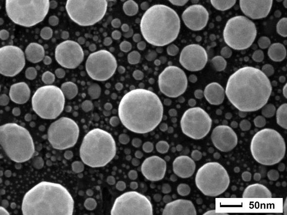

Materials & Structural Characterisation
Investigate the crystal structure, phase composition and surface features of materials used in research and industrial applications.
Techniques & equipment
- X-ray diffraction (XRD) — Rigaku MiniFlex
- Scanning electron microscopy (SEM) — Phenom
- Atomic force microscopy (AFM) — Nanosurf
Typical applications
- Phase identification
- Crystallinity assessment
- Surface morphology
- Surface topography